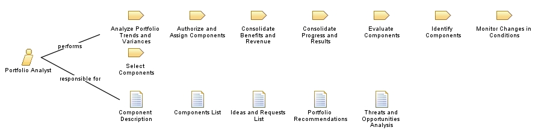

| Role: Portfolio Analyst |
 |
|
Relationships
 |
||
| Primary Performs | ||
|---|---|---|
| Additionally Performs | ||
| Modifies |
|
|
Main Description
This role assists the product portfolio managers and has the following responsibilities:
|
Licensed Materials - Property of IBM |